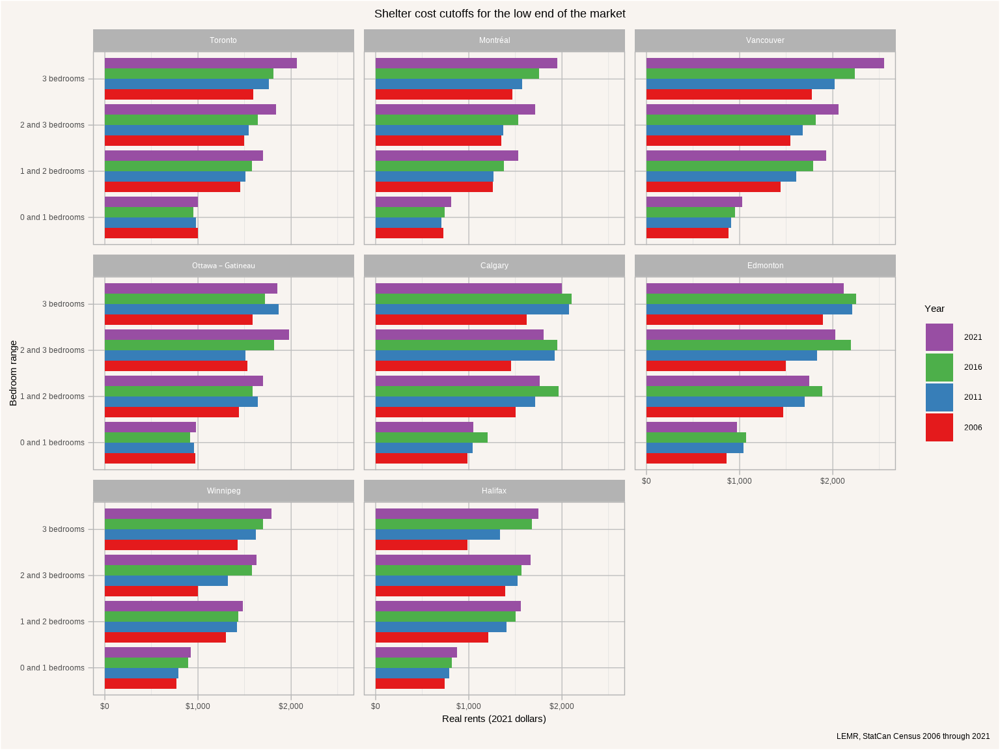
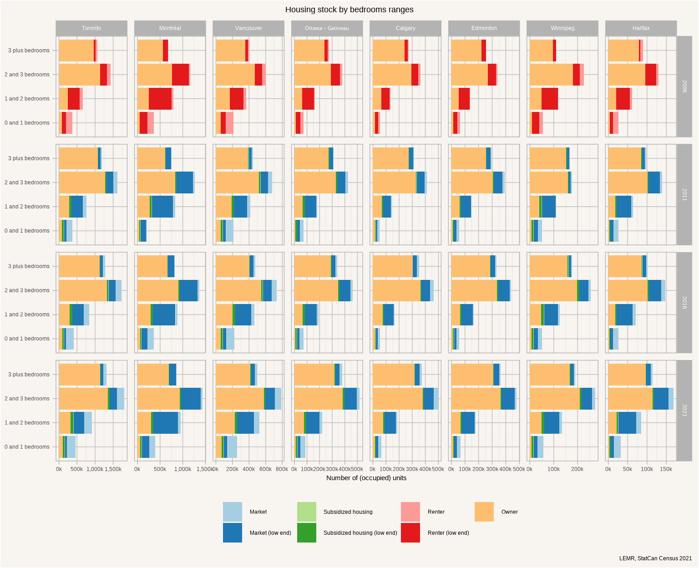
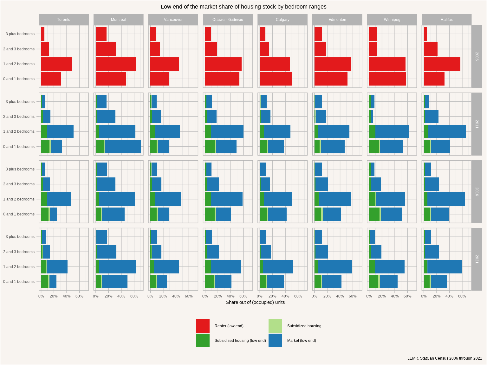
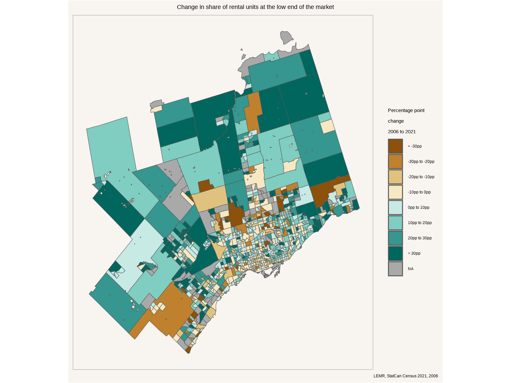

How to find the low end of the market
Understanding the low end of the rental housing market is difficult, but important. It is trying to understand the boundary between market and non-market housing. Ideally the boundary is covered by ample overlap between market and non-market housing, with the low end of the market serving people with characteristics not too dissimilar from people in non-market housing, and doing so at similar rents. In reality this boundary often presents itself as a wide chasm, with a large gap between rents in market and non-market housing.
How can one define the low end of the market and how can it be measured? There is no standardized or straight-forward way to do this, the definition developed by LEMR identifies the “low end” of the rental market in a region by identifying the failure point at which families and individuals struggle to rent a home on the free market. It is just as much a measure of the income level of families at that failure point as it is the corresponding level of rent.
To make this precise, the “low end of the rental market” restricts itself to market housing, that is housing that is rented and that gets allocated by ability and willingness to pay. This stands in contrast to ownership housing, which is not available for rent, as well as non-market housing, which is allocated by wait lists or other non-market criteria.
The restriction on rental tenure presents some difficulties as tenure can be fungible. For purpose-built rental housing it’s straight-forward, these homes remain long-term as rental homes. For the secondary rental market homes may go back and forth between tenures. LEMR takes a broad approach to this and consider both, the primary and secondary rental market. There is some remaining ambiguity about the distinction between market and non-market housing, some housing is in principle traded or rented on the free market, but in practice gets allocated through non-market mechanisms. For example someone renting a second property out to a friend or relative at reduced rates. Or a caretaker unit in the primary market. From administrative data, like Empty Homes Tax declarations data, we know that these non-market allocations of market homes exist and make up around 10% of the secondary rental market. We also see echos of this in census data with abnormally low shelter costs consisting mostly or entirely of utility payments.
To determine the thresholds LEMR determines the income level below which families and unattached individuals in a region on average have difficulty securing affordable rental housing, and take the 30% of this income level as the threshold shelter cost level. This is made precise by considering “renter Lorenz curves”, taking the point where the curve crosses the diagonal. More details on the methodology behind the thresholds can be found elsewhere.
Different family configurations have different housing needs, which are roughly encoded by number of bedrooms and LEMR correspondingly estimates thresholds separately by bedroom ranges, as visualized in Figure 1.
Here we show inflation-adjusted rents. The changing thresholds reflect the changing affordability environment. Real incomes increased over this time period, accounting for some of the changes in thresholds. At the same time affordability decreased, requiring higher incomes to comfortably secure housing, resulting in higher thresholds.
Using these thresholds allows us to understand how households distribute over the housing stock, taking tenure into account as shown in Figure 2.

Subsidized units include units in dedicated non-market housing as well as households receiving housing supports living in market housing.
Generally the housing stock has grown over time in each of the metro areas, with a small portion of that growth in Montréal, Ottawa, and Halifax being accounted for by the geographic extent of these metro areas growing over the time period.
Figure 3 focuses in on the share of (occupied) housing units serving the low end of the market, throwing all subsidized units into the mix.

The share of units at the low end of the market has been fairly constant over time for most bedroom ranges, although the 0 and 1 bedrrom range shows significant variation for some metro areas which gets exaggerated by the small denominator compared to the other bedroom ranges. The the biggest pressures for families and individuals are to find 1 or 2 bedroom units, the group with the largest share of homes with rents that are not affordable to families and individuals at the corresponding income percentile.
These are units that tenants are currently renting at rates corresponding to the low end of the market, it is worthwhile to understand how many of these are available for people to move in vs occupied by the same tenants over longer periods of time. For this we look at the share of the units at the low end of the market that have gotten moved into during the five years prior to the census. Younger demographics, which tend to be over-represented among renters, tend to move a lot as their living and job situation is in flux and their housing needs change with it.
By this metric we see stark differences across metro areas, and for some metro areas also across time. On the one hand there are metro areas like Edmonton with upward of 60% of households in the lower end of the market having moved in within the past 5 years. At the other end of the spectrum is Toronto, which started out with rates between 50% and 60% in 2006 but dramatically declined to rates around 30% in 2021, giving evidence to stagnating residential mobility. Rates of 1-year movers should be viewed with some caution as they are likely impacted by the pandemic.
It’s worthwhile to look at mobility rates by LEMR category at least for 2021. Figure 5 breaks this down the 5-year mobility rates for low-end of the market rentals, subsidized rentals renting at rents at the low end, and subsidized units renting above the low-end cutoff but possibly getting augmented with income supplements.
As one would expect, subsidized units at LEMR rents show the lowest availability with only Winnipeg sowing mobility rates comparable to the other LEMR categories, a testament to the gap between subsidized and market units in most metro areas and tenants in subsidized units renting at LEMR rents being stuck and unable to transition out of these.
There are several likely underlying causes of this decline in mobility in the low end of the market. In tight rental market rents on new units tend to rise faster than rents of occupied units. This is especially true in jurisdictions with strongly binding rent control, like Ontario and BC. This makes it more difficult for sitting tenants to move, and reduces their mobility and number of rental units available for others to move in. At the same time, units that do get vacated might filter up and out of the low-end of the market as rents get reset at change of tenancy. Lastly, this can get impacted by changes in renter demographics. Residential mobility is strongly linked with age, with younger people moving more frequently than older people. Shifts in the demographics of renters can lead do reductions in residential mobility independent of other pressures in the rental market. However, tenure choice is not independent of housing pressures, and these changing demographics may also reflect increasing barriers to home ownership.
Toronto
We take a closer look at the spatial distribution of units at the low end of the market in Toronto, and look at changes over time. For this we focus in on the 1 and 2 bedroom range, partially because it has the highest share of units at the low end of the market, but also because of the broad suitability to individuals as well as families with up to one child.
The broad geography of 1 to 2 bedroom units by tenure and low-end of the market status is shown in Figure 6.
This shows that low-end of the market units exist in some downtown pockets, as well as along the eastern and western edges of the central parts of the city, and proliferate out in clusters through the periphery. Figure 7 gives a clearer view of this by showing the share of rental units at the low end of the market in 2021 out of all housing units.
This includes ownership units, Figure 8 removes these and focus in on just the units that are currently used for rental.
Given the dramatic change in low-end of the market rental units in Toronto over the past 15 years Figure 9 visualizes the change in the share of rental units at the low end of the market between 2006 and 2021. There are a number of moving parts that need to be considered when interpreting this for specific census tracts, the LEMR thresholds change over time, units in the secondary market may transition between rental and ownership, and new construction may shift both numerators and denominators, although the impact on numerators is likely small given that new units tend to fetch higher rents.
Here we see that the areas in the core of the city have generally seen losses, with the share of units at the low end of the market increasing in the eastern and western parts of the city and in the suburbs, as can be better seen when showing the entire metro area in Figure 10.

This is further compounded by a shift in the share of 1 and 2 bedroom housing units used as rental as opposed to being owner-occupied, as shown in Figure 11.
In combination we see a shift of families relying on LEMR units toward the periphery of the region, likely pushing some of them out of Metro Toronto proper and into surrounding metro areas.